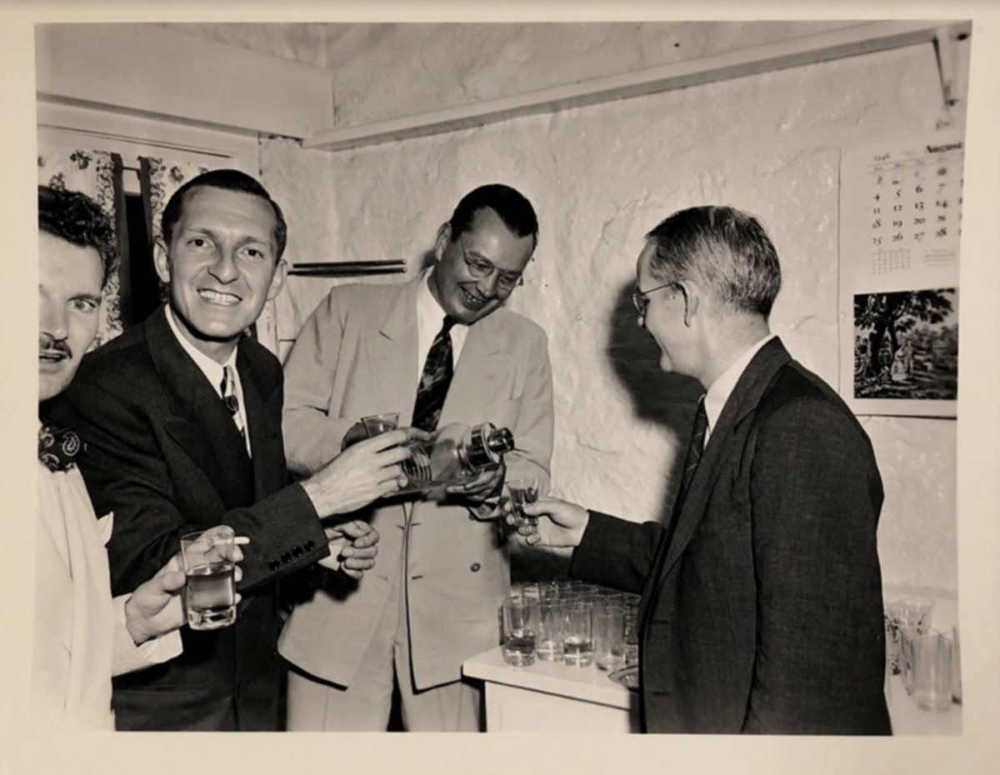
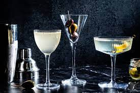

"The Manhattan Project"


Description
This recipe, which was first created by J. Robert Oppenheimer, packs a punch.
After dipping the rim of a chilled martini glass in a mixture of honey and lime, pour in a mixture of gin and vermouth that has been chilled on ice. Then, take cover!
Ingredients
- 4 oz gin (ideally made with 200 proof lab alcohol)
- Smidgen of dry vermouth
- Lime juice
- Honey
Steps
- Stir the gin and vermouth with ice until chilled.
- Strain into a chilled martini glass whose rim has been dipped in equal parts lime and honey.